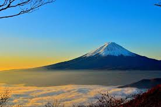

Pada suatu pagi yang cerah, saya dan teman-teman memutuskan untuk mendaki sebuah gunung yang terkenal dengan pemandangan matahari terbitnya yang luar biasa. Perjalanan dimulai dari kaki gunung pada pukul 4 pagi. Dengan semangat yang tinggi, kami berjalan menyusuri jalur pendakian yang terjal.
Setelah beberapa jam mendaki, akhirnya kami sampai di puncak. Dari puncak gunung, kami bisa melihat awan yang menyelimuti lembah, serta matahari yang mulai terbit di ufuk timur. Pemandangan tersebut benar-benar membuat perjalanan kami terasa sangat berharga.
Perjalanan turun kembali juga penuh dengan keindahan alam yang tidak kalah mempesona. Kami bersyukur bisa menghabiskan waktu di alam bebas dan menikmati momen-momen yang tak terlupakan ini bersama teman-teman.